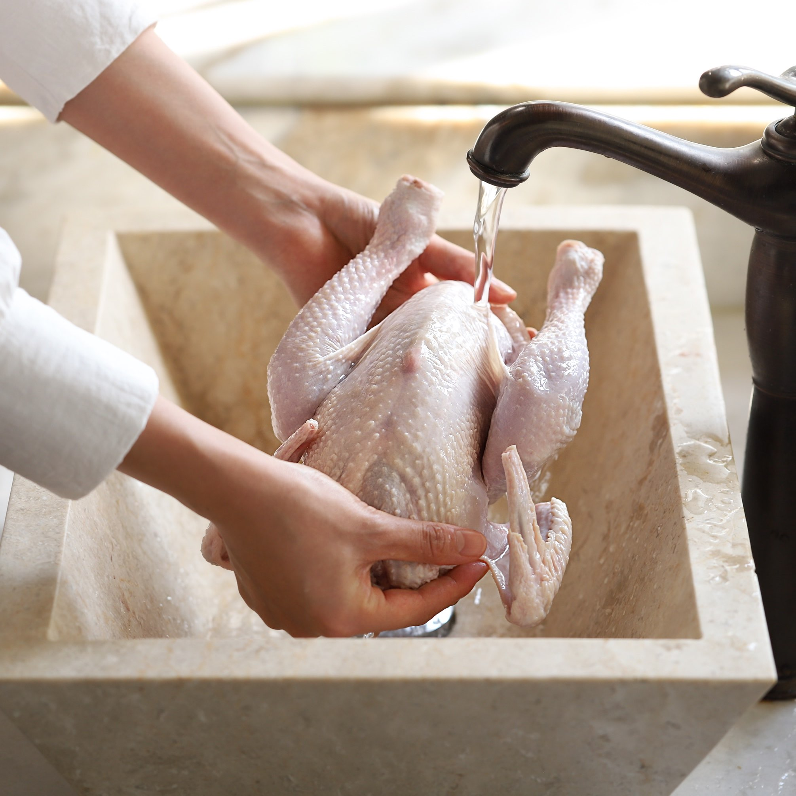
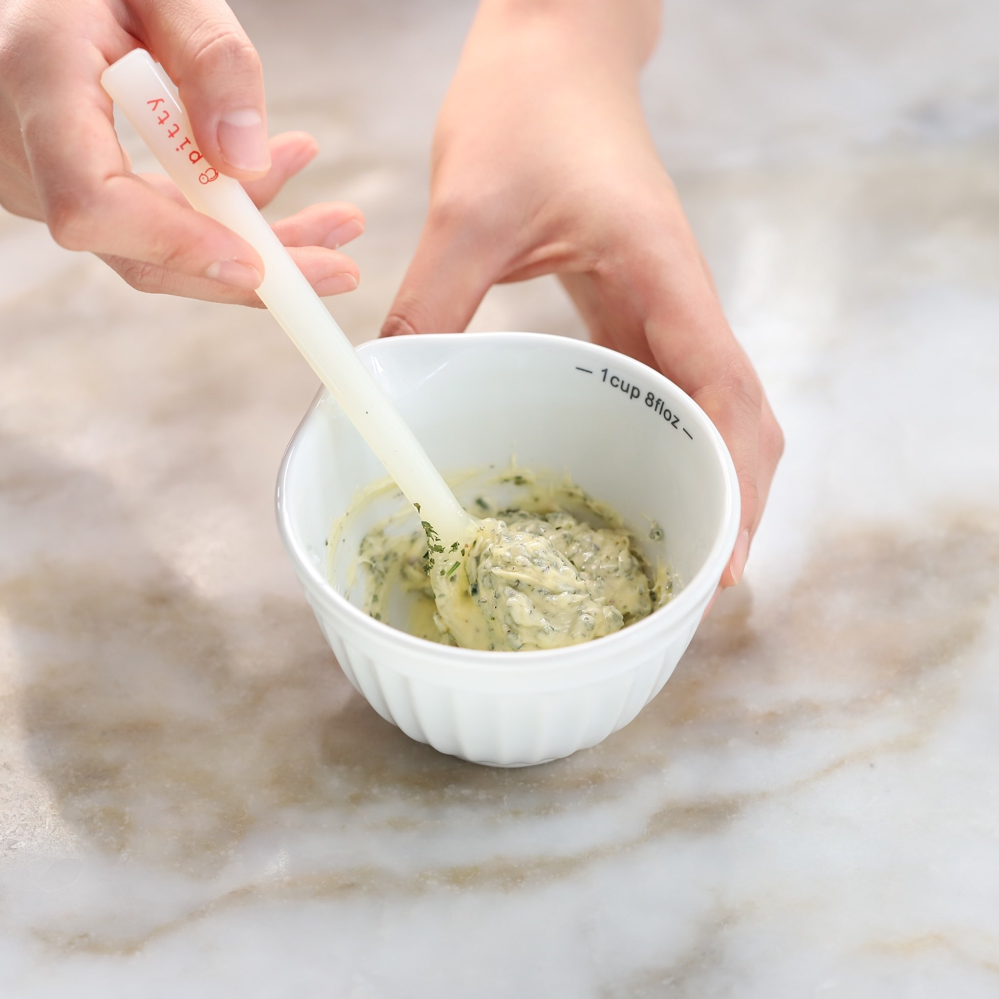
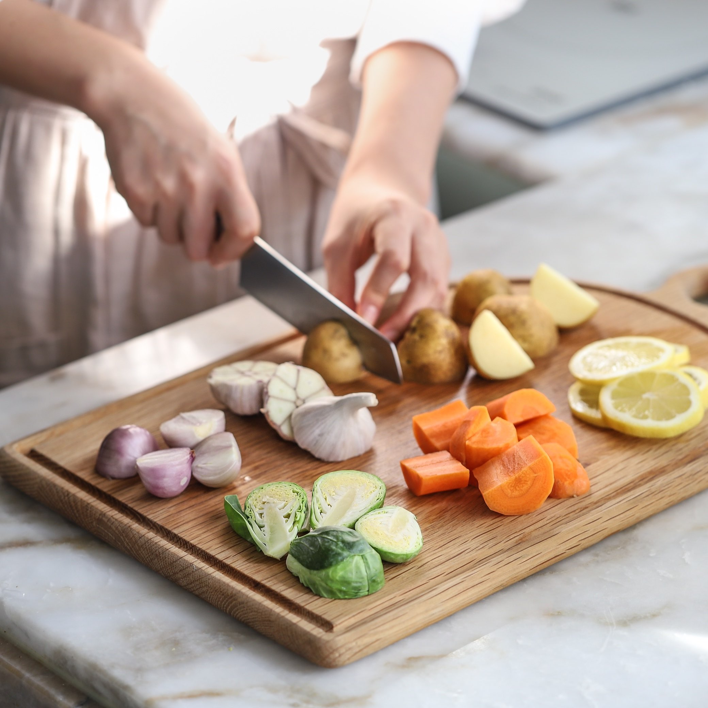

Trong bữa tiệc Giáng sinh, không thể thiếu các món ăn truyền thống, đặc biệt là món gà đút lò thơm nức mũi.
Giáng sinh năm nay bạn hãy tự tay vào bếp làm ngay món gà đút lò kiểu Tây hấp dẫn và đậm không khí Noel nhé. Cách làm gà tây đút lò không hề khó, hãy cùng tôi vào bếp và thực hiện ngay món ăn tuyệt vời này.
1. Nguyên liệu cho món gà đút lò kiểu Tây
- Gà tây: 1 con
- 1 quả cam vàng (hoặc chanh vàng)
- 2-3 củ khoai tây
- 1 củ cà rốt
- 1 củ hành tây
- 50g bông cải xanh (có thể sử dụng các loại rau,củ, quả tùy sở thích)
- 2-3 nhánh lá hương thảo
- Bột rau mùi (hoặc loại gia vị yêu thích)
- 1 thìa café tiêu xay
- 1 thìa café muối
- 1-2 củ tỏi
- 2 muỗng canh dầu Olive
- 2 muỗng canh mật ong
- Sốt mayonnaise
2.Bắt tay vào thực hiện thôi Bước 1: Gà tây tôi làm sạch, sau đó chặt bỏ phần đầu, cổ, chân, bỏ hết nội tạng. Sau đó mang gà rửa sạch. Lưu ý, bạn cũng cần làm nóng lò ở nhiệt độ 75 độ C trong vòng 15 phút.
Bước 2: Lấy một bát sạch, tôi trộn đều sốt mayonnaise, mật ong, dầu olive với gia vị muối, tỏi, bột rau mùi, bơ vào với nhau.
Bước 3: Chanh cắt lát. Khoai tây, cà rốt gọt vỏ cắt khúc vừa ăn, bông cải xanh rửa sạch cắt bỏ phần già, hành tây xắt lát tròn
Bước 4: Cột hai chân gà vào nhau.
Bước 5: Xào xơ các loại rau củ quả. Trongh lúc xào tôi sẽ cho thêm một chút gia vị cho vừa ăn.
Bước 6: Tôi phết đều hỗn hợp ướp gà bên trên lên khắp thân gà. Lưu ý cần phết cho thật đều mình gà. Quá trình ướp gà với sốt sẽ giúp thịt gà luôn có độ ẩm nhất định nên khi nướng sẽ không lo gà nướng bị khô thịt.
Bước 7: Cho chanh xắt lát, khoai tây, cà rốt, hành tây lên, cắt bỏ đầu củ tỏi đặt lên khay. Sau đó đặt gà lên trên.
Bước 8: Đặt thêm một vài nhánh hương thảo lên trên
Bước 9: Cho khay gà vào lò nướng ở 175 độ C trong khoảng 45 phút, khi nướng được nửa thời gian thì lật mặt đùi gà cho thịt chín đều
Bước 10: Gà chín, lấy ra đĩa to, có thể trang trí thêm với rau củ quả cho đẹp nhé!
Còn chần chờ gì nữa mà không vào bếp thực hiện ngay công thức này thôi. Hãy chia sẻ những hình ảnh sau khi thực hiện món gà đút lò bạn nhé!